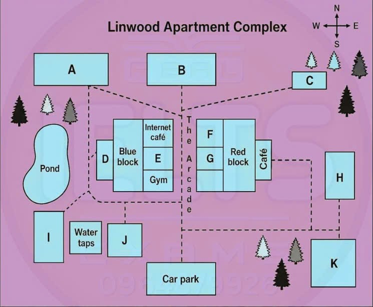

Phiếu trả lời Listening
Bấm số câu để nhảy tới câu đó. Bài làm được tự lưu trên máy này. Thời gian thi thật: khoảng 30 phút.
PART 1 Questions 1–10
Complete the form below.
Write ONE WORD AND/OR A NUMBER for each answer.
Kiwi Air Customer Complaint Form
Customer has been trying to make a booking using the internet
Booking details
Name: Janet
Ticket details: one adult and three children
(Wellington to Christchurch) – four tickets
Flight details: November 10th – 15th
Time: departing at a.m.
Details of the problem
the website changes the rate for one child
the website keep giving the customer messages
Customer informed that Kiwi Air policy:
- allows no more than child fares per adult
(this applies to domestic flights only)
Customer’s reasons for complaint
none of her children are years old or older
child passengers require less
the rule is unfair for large families and groups
Customer invited to send written complaint
letter to go to the
reply predicted within a week
reference number:
📜 Lời thoại Part 1
Part 1. You will hear a telephone conversation between a woman and a staff member of an airline. First you have some time to look at questions 1 to 4. Now listen carefully and answer questions 1 to 4. Kiwi Air, good morning.
You're speaking with Roger.
How may I help you? Yes, hi. My name's Janet. I've just been trying to make a booking on the internet and I'm having a problem that I'd like to complain about.
So let me just take down your full name. It's Janet Quigley. That's Q-U-I-G-L-E-Y.
Thank you. And what's the problem exactly? Well, yes. I'm trying to book myself and three children, so four tickets, to fly within New Zealand.
We're wanting to fly from Wellington to Christchurch. Not one way, I mean, but return. So it's just a simple booking.
Yes, and you've put your dates in, have you? Yes, the dates are... um... what are we in now? It's September, isn't it? So I'm booking for October. Oh, sorry, I mean November.
The 10th till the 15th.
Right. Let me just get that down on the form. And what time would that be? We'd be leaving at 11.45 in the morning, arriving into Christchurch at 12.30. Mm-hm.
I know that it's cheaper to not make the reservation in person, so to save paying the fee, I've been trying to do it through your home page. Yes, so what's the problem exactly? Well, every time I put in the number of adults and children travelling, the website automatically alters the rate for one of the children to what you'd pay for an adult. It's very annoying.
I'm getting so frustrated with it. And each time I change it back, I've been getting error messages telling me to call you directly. I really can't understand it.
Before you hear the rest of the conversation, you have some time to look at questions 5 to 10. Now listen and answer questions 5 to 10. All right, well, yes, there is a reason for why that's happening.
It's Kiwi Air policy, I'm afraid, to allow a maximum of two children to travel on childfares with just the one adult accompanying them. So because there's three of them and just me, do you mean I have to pay an adult fare for one of my children? Yes, that's right. But I've flown to Australia before on my own with the children, and we didn't have to pay extra.
It's a policy that we've just introduced for domestic air travel. It may be extended later for international travel as well. But an adult fare is for someone over the age of 12.
My children are only 11, 8 and 5. It's not fair to charge them for an adult rate. Besides, they actually eat less than an adult, so they wouldn't consume as much food on the plane. I just don't think it's right.
Well, I'm sorry, but that's how we charge. We do look after children well on our flights, you know. We give them little packs of games and coloured pencils so they have something to do, you know.
Well, still, the difference to pay between the fares is a lot of extra money that I hadn't budgeted for. It seems to me that your rules discriminate against a parent travelling on their own with the children, and also families with lots of children. And what about school groups? That wouldn't be fair.
Well, madam, yes, I can see your point. You're welcome to put your complaint in writing if that's what you'd like to do. Well, I certainly would.
I'll be writing a letter to your customer services officer, is it? Just address it to the manager. Then it will reach the right person. That's fine.
That's your right to do that. And how soon do you think they'll get back to me? I must say, I really am shocked at this. I'm not happy about it at all.
Um, well, at busy times it sometimes takes a month, but it's low season now, so you should expect to receive a response probably inside a week. You need to take down this reference number. I'll just give it to you.
It's GBK8422. All right, then. I'll put that in the letter.
Well, thanks for your help. Thank you for calling Kiwi Air. You now have one minute to check your answers to Part 1.
PART 2 Questions 11–20
Questions 11–14
Choose the correct letter, A, B or C.
Linwood Apartment Complex
11 When was the first apartment complex completed?
12 What does the manager say he enjoys most about the job?
13 Regarding restrictions in the complex, the manager says
14 What does the manager ask residents to do for the welcome party?
Questions 15–20
Label the map below.
Write the correct letter, A–K, next to Questions 15–20.

15 Shop
16 Barbecue area
17 Childcare center
18 Laundry
19 Recreation room
20 Hall
📜 Lời thoại Part 2
Part 2. You will hear the manager of the Linwood apartment complex introducing the complex to a group of new residents.
First, you have some time to look at questions 11 to 14. Now listen carefully and answer questions 11 to 14. Good afternoon, everyone.
Thank you for coming to the meeting. My name is Bob McDonald, and I'm the manager of the Linwood apartment complex. Firstly, I'd like to welcome you all.
I'm sure you'll enjoy living here. Let's start with a little bit of history about the Linwood apartments. The council first discussed the concept of this project five years ago, but there was a small delay initially while plans and administration were completed.
Work finally started three years later, and one year ago the complex was finished and received its first residents, and I'm happy to say it's been a great place to live ever since. So now just a little bit more about my role within the complex. I'm responsible for ensuring that rent is paid on time, but I can't say I get a lot of satisfaction from that aspect of the job.
Fortunately, because the building is quite new, there is generally little to do to keep everything in good working order. What I love is working with the people who live here, especially helping neighbours deal with any little misunderstandings that might come up between them. We want you to feel at home here, but there are some restrictions on what you can do.
You're welcome to redecorate inside your apartment if you don't like the colour, but you can't change the outward appearance of the building in any way, and that also includes altering the plantings around the complex by putting in your own trees or flowers. Now some of you were asking earlier about the welcome party. That will be held as planned next Friday evening, and we'll be doing all the catering so that there are no worries about food, but it would be great if you could come along for a while on the day of the party to help put some party lights in the hall.
When you arrive, you'll find there are badges already prepared for everybody, so one will have your name on it. Before you hear the rest of the talk, you have some time to look at questions 15 to 20. Now listen and answer questions 15 to 20.
Now if you'd all like to have a look at your map of the apartment complex, I'll just go over where you can find all the facilities. The complex is a pedestrian area, so you can park your car here in the car park at the bottom of the map. There are two main apartment blocks, blue and red, with an open walkway up the middle called the arcade.
When you first arrive, you'll probably want to know where the shop is, so if you go up from the car park into the arcade, you'll find the shop at the end on the right, opposite the internet cafe. One popular attraction, especially in summer, is the barbecue area, so if you walk from the car park and through the arcade, then turn right and follow the path, you'll see it at the end. For those of you with young children, we have an excellent childcare centre.
From the car park, head north, but before you get to the arcade, turn left and follow the path around until you reach the pond. You'll find it opposite the pond, on the west side of the blue block. Now if you need to use the laundry, walk up from the car park and into the arcade, look on your left and you'll see the gym, but keep going, and it's directly next door to that.
You all need to know where the recreation room is. Head north from the car park and take the first turning on the right. Go straight on to the end and you'll find two buildings facing each other.
You want the one to the north, opposite the cafe. Finally, for the welcome party in the hall next week, from the car park, go straight on to the end of the arcade, but then don't go too far, take the path up to the left, and it's at the end of that path, just above the trees on your map. Well, I look forward to welcoming you all.
That is the end of Part 2. You now have 30 seconds to check your answers to Part 2.
PART 3 Questions 21–30
Questions 21–24
Choose the correct letter, A, B or C.
The history and development of bicycle
21 Izzy believes the ‘safety bicycle’ is significant because it was
22 What effect of bicycles on the 19th-century working classes does Max want to highlight?
23 What will Max and Izzy stress about attitudes to bicycles in the 20th century?
24 What does Max say about a scheme to provide free bikes to school pupils?
Questions 25–30
Which reason did each of the following people give for using a bike?
Write the correct letter, A–H, next to Questions 25–30.
People
David
Marlene
Annabelle
Rashid
Saira
Giovanni
Reasons
A Cycling is a convenient way to travel.
B Bikes are environmentally friendly.
C Riding a bike can be a social activity.
D Bikes are a cheap form of transport.
E Cycling is a way to spend time outdoors.
F Riding a bike is good for mental health.
G Riding a bike is good exercise.
H Cycling can be done by all ages.
📜 Lời thoại Part 3
Part 3 You will hear two Design and Technology students, called Max and Izzy, planning their presentation about the history and development of the bicycle. First, you have some time to look at questions 21 to 24. Now listen carefully and answer questions 21 to 24.
Hi, Izzy. Can we talk about our presentation? Sure. So, our topic's the bicycle, its history and its effect on society in the Western world.
We should start with its invention in the 1800s. The first bike wasn't very successful, was it? I think the model they called the safety bicycle is more significant. Yes.
Was that name because it was safe for cyclists of all ages, including young kids? I think it was more to do with the comparison to previous versions, which got their speed from one large wheel. This bike had equally sized wheels and its speed came from gears. It was an important development, as it was the first model that actually looked like a bike you'd see today.
Right. And the development of that bicycle at the end of the 19th century had an enormous impact on the working classes. You mean how it gave them freedom to move around and look for jobs? I suppose before the bike, they didn't have private transport, so were limited in where they could work.
Right. Because it took such a long time to go anywhere. But I'd really like to draw attention to how inhabitants of rural areas were able to travel outside their communities, and that led them to marrying people they never could have met in the past.
That changed society, and I'd like to discuss it in our presentation. Oh, good idea. So what should we stress about changing attitudes to bicycles in the 20th century? Well, the bicycle was an important means of transport through the early 1900s, and that continued until the 1950s, when cars became available to the general population and much more popular.
That led to people losing interest in bikes for a while. I hadn't realised the impact that people's love of motorised transport had on the bike's reputation. Yes, that's a key point we should make.
Then the fold-up bike and others came along in the 60s, which helped sales pick up. Hmm. Then things stayed fairly stable until the fitness craze of the 80s piqued interest in mountain biking and sales went up, but the bike had lost its position as a key mode of transport.
Right. I'd like to talk about some current projects around the world involving bikes. How about the scheme in an American school that provides bikes for all its pupils? I expect the pupils are delighted, not to mention the parents.
I suppose so, although I wonder how much it costs. Probably not as much as other initiatives. I just wonder if the advantages really justify the scheme.
Well, it must enable pupils to get to school more easily. But does attendance actually improve? If there's any data to support that, we need to include it, but I haven't found enough. Let's look into that later.
Before you hear the rest of the discussion, you have some time to look at questions 25 to 30. Now listen and answer questions 25 to 30. Could we look at the results of the survey we did with cyclists? We each spoke to different people.
Yes. One of my first interviewees was David. He works from home and spends a lot of time indoors, so at weekends he goes out with a cycling club.
He said it's a way to connect with people apart from the other benefits. OK. Who else? I interviewed a woman called Marlene.
I asked her what her main reason for using a bike was. She's got young children and doesn't have much free time, so cycling to work is a way for her to keep fit. That's what she liked about it.
OK. How about Annabelle? Was she the one who sold her car and uses a bike instead? Was that because of pollution? She did sell her car, but her choice to travel by bike was made for financial reasons as she was paying so much for petrol.
I see.
And Rashid? He was probably the oldest person we spoke to. He's in his seventies, yes, and he's been cycling around the city for years. He said that there are several advantages, but he really loves the way it helps him think clearly and takes his mind off any worries he has.
Great. What about you? Have you got notes about Saira? Yes, I spoke to her last week. She lives in the countryside and she loves being on her bike in the open air and enjoying the beautiful environment and landscape around her.
Right. The last person I interviewed was Giovanni. He's very practical and he said it's just easier for him to use a bike to get around town than to drive.
He finds sitting in traffic and looking for parking spaces too time consuming, so he switched to using a bike instead. Great. Shall we meet next week? That is the end of Part 3. You now have 30 seconds to check your answers to Part 3.
PART 4 Questions 31–40
Complete the notes below.
Write ONE WORD ONLY for each answer.
The Patagon People of South America
Clothing
One type of coat is culturally important.
Young guanaco were used to make the coats because of their skin.
Men hunted the guanaco.
Women sewed the skins together into coats.
Scrapers made from are today displayed in museums.
Colours from natural were used.
The arrival of the Spanish
More guanaco were caught because of the use of the for hunting.
Coats played a role rather than just being for personal use.
New materials such as improved the scraping process.
Conclusions
Coat designs date from pre-historic times – similar designs are found inside
Coat designs may have been a link with people's
Large Patagon settlements were not built on the
Shepherds still make using similar techniques.
📜 Lời thoại Part 4
Part 4 You will hear part of a lecture about archaeological research in the Patagonia region of South America.
First, you have some time to look at questions 31 to 40. Now listen carefully and answer questions 31 to 40. Afternoon, everyone.
Welcome to today's archaeology lecture. This afternoon's topic will be the Patagon civilisation that flourished at the southern tip of the South American continent around 600 years ago. Now, archaeologists don't know a great deal about the Patagon people.
However, they did leave behind one important piece of evidence, a type of coat that was worn over the body for warmth that gives us valuable information about this lost culture. The coat was made from the fur of the guanaco. That's a wild animal like a goat.
And it took as many as 13 young guanaco to make a single coat. Young animals were preferred as their skin was soft, which made it easy to work with. For the Patagon men, hunting was a way of life, particularly hunting guanaco.
However, once the animals were killed, then different skills were needed, and it was the women who were mostly responsible for the manufacturing process. In particular, it was their ability to sew together many small skins into a coat that made women integral to the process. So, the first thing they did was get the skins ready, and for this they used a special scraper tool.
Several examples of the scrapers may still be seen today in various museums in the region. They were constructed from specially sharpened stone, so have survived remarkably well. Once the skins were clean, they were usually decorated, usually done by painting on colours, mostly some combination of red, yellow and green.
The colours themselves occurred naturally in minerals that were dug up from the ground and processed, usually by mixing with water. This basically was the way the Patagon people made coats for, well, over a thousand years and perhaps longer. But the process changed dramatically after the Spanish arrived in the early 1500s.
The coming of the Spanish obviously had numerous impacts on the area, but in terms of coat making, there was one significant development in the hunting technique. Many more guanaco were hunted after the introduction of the horse to the region, which made the Patagon people more mobile. Another important development was that the Spanish themselves liked, were great admirers of the coats and bought them for high prices, so that while in the past guanaco had only been hunted to meet subsistence needs, now the coats were increasingly part of a commercial process, I mean something that could be bought and sold for money.
And that meant many more guanaco were hunted as well. Finally, the manufacturing process itself was changed by the arrival of the Spanish. That's because they bought many new materials with them that weren't previously known in the region.
Most important for coat making, the old scrapers used for cleaning the skins were replaced with new ones made from glass, and this was more effective and easier to keep sharp. So what conclusions can we draw from Patagon coats? Well, the striking designs that were painted onto many of the more elaborate coats have always fascinated archaeologists. These patterns must have their origins far back in prehistoric times.
We are able to say this with some confidence because very similar designs have been found in examples of art painted on the rock walls of caves that have very ancient origins. Did the designs have any significance, or were they merely decorations? The answer isn't clear, but some archaeologists have been prepared to speculate. One possibility is that the designs may have represented a way of connecting with ancestors from previous times, and this is certainly an idea that deserves further investigation.
Another interesting speculation concerns the location of large Patagon settlements. Because the natural habitat of the young Guanaco was the rich grasslands of inland areas, it seems unlikely that these were constructed around the coast, but rather in parts of the interior. Finally, we should note that the traditional art of coat making has long since been lost in this region, but Patagon shepherds today do still employ some of the same techniques to make blankets in the winter months, though there is no painting or design work involved.
Well, that is the end of my lecture, but if you have any questions, please feel free... That is the end of part four. You now have one minute to check your answers to part four. That is the end of the listening test.
You now have ten minutes to transfer your answers to the listening answer sheet.
Phiếu trả lời Reading
Bấm số câu để nhảy tới câu đó. Bài làm được tự lưu trên máy này. Thời gian thi thật: 60 phút.
READING PASSAGE 1 Questions 1–13
You should spend about 20 minutes on Questions 1–13, which are based on Reading Passage 1.
HEALTH IN THE WILD
Many animals seem able to treat their illnesses themselves. Humans may have a thing or two to learn from them.
For the past decade, Dr Cindy Engel, a lecturer in Environmental Sciences at Britain’s Open University, has been collating examples of self-medicating behaviour in wild animals. In a recent talk, she explained that the idea that animals can treat themselves has been generally regarded with some skepticism by other animal behaviourists. But a growing number of them now think that wild animals can and do deal with their own medical needs.
Dr William Karesh of the Wildlife Conservation Society in New York, for example, has studied the health of a wide range of wild animals, including anaconda snakes, macaws, penguins, impala and buffalo. The animals were mostly in good physical condition, which is not surprising since the weak quickly die in the wild. But blood tests showed that many had encountered unpleasant viral and bacterial diseases in the past - including diseases that are often fatal in captive animals, even when treated by vets. Moreover, if healthy wild animals are brought into captivity, their health often deteriorates unless great care is taken over their living conditions. Such observations suggest that wild animals can do something to keep themselves healthy that captive animals cannot.
One example of self-medicaction was discovered in 1987. Dr Michael Huffman and Mohamedi Seifu, working in the Mahale Mountains National Park in Tanzania, noticed that local chimpanzees suffering from intestinal worms would dose themselves with the pith (the white substance between the skin and the flesh) of a plant called Veronia. This plant produces poisonous chemicals called terpenes. Its pith contains a strong enough concentration to kill gut parasites, but not so strong as to kill chimps (nor people for that matter; locals use the pith for the same purpose).
Since the Veronia-eating chimps were discovered, more evidence has emerged suggesting that animals often eat things for medical rather than nutritional reasons. Many species, for example, consume dirt - a behaviour known as geophagy. Historically, the preferred explanation was that soil supplies minerals such as salt. But geophagy occurs in areas where the earth is not a useful source of minerals, and also in places where minerals can be more easily obtained from certain plants that are known to be rich in them. Clearly, the animals must be getting something else out of eating the earth.
The current belief is that soil - and particularly the clay in it - helps to detoxify the defensive poisons that some plants produce in an attempt to prevent themselves from being eaten. Evidence for the detoxifying nature of clay came in 1999 from an experiment carried out on macaws by Dr James Gilardi and his colleagues at the University of California, Davis. Macaws eat seeds containing alkaloids, a group of chemicals that has some notoriously toxic members, such as strychnine. In the wild, the birds are frequently seen perched on eroding riverbanks eating clay. Dr Gilardi fed one group of macaws a mixture of harmless alkaloid and clay, and a second group just the alkaloid. Several hours later, the macaws that had eaten the clay had 60% less alkaloid in their bloodstreams than those that had not, suggesting that the current hypothesis is correct.
A third instance of animals’ self-medication is the use of mechanical scours to get rid of gut parasites. In 1972, Dr Richard Wrangham, a researcher at the Gombe Stream Reserve in Tanzania, noticed that chimpanzees were eating the leaves of a tree called Aspilia. The chimps chose the leaves carefully by testing them in their mouths. Having chosen a leaf, a chimp would fold it into a fan and swallow it. Some of the chimps were noticed wrinkling their noses as they swallowed these leaves, suggesting the experience was unpleasant. Later, undigested leaves were found on the forest floor.
Dr Wrangham rightly guessed that the leaves had a medicinal purpose - this was, indeed, one of the earliest interpretations of a behaviour pattern known as self- medication. However, he guessed wrong about what the mechanism was. His (and everybody else’s) assumption was that Aspilia released a drug, and this sparked more than two decades of photochemical research to try to find out what chemical the chimps were after. But by the 1990s, chimps across Africa had been seen swallowing the leaves of 19 different Aspilia species that seemed to have few suitable chemicals in common. The drug hypothesis was looking more and more dubious.
It was Dr Huffman who got to the root of problem. He did so by watching what came out of the chimps, rather than concentrating on what went in. he found that the egested leaves were full of intestinal worms. The factor common to all 19 species of leaves were full of intestinal worms. The factor common to all 19 species of leaves swallowed by the chimps was that they were covered with microscopic hooks. These caught the worms and dragged them from their lodgings.
Dr Engel is now particularly excited about how knowledge of the way that animals look after themselves could be used to improve the health of livestock. People might also be able to learn a thing or two - and may, indeed, already have done so. Geophagy, for example, is a common behaviour in many parts of the world. The medical stalls in African markets frequently sell tablets made of different sorts of clays, appropriate to different medical conditions.
Africans brought to the Americas as slaves continued this tradition, which gave their owners one more excuse to affect to despise them. Yet, as Dr Engel points out, Rwandan mountain gorillas eat a type of clay rather similar to kaolinite — the main ingredient of many patent medicines sold over the counter in the West for digestive complaints. Dirt can sometimes be good for you, and to be “as sick as a parrot” may, after all, be a state to be desired.
Questions 1–4
Choose TRUE if the statement agrees with the information given in the text, choose FALSE if the statement contradicts the information, or choose NOT GIVEN if there is no information on this.
1 Dr Engel has spent ten years gathering evidence for the notion that animals treat their own illnesses.
2 Animal behaviourists have always believed that animals know how to heal themselves.
3 Dr Karesh enlisted the help of a medical team during his research.
4 Wild animals taken into captivity tend to experience a decline in health.
Questions 5–9
Complete the table below.
Write ONE WORD ONLY from the passage for each answer.
| Researchers | Subjects | Self-treatment | Findings | Other observations |
|---|---|---|---|---|
| Michael Huffman & Mohamedi Seifu 1987 | Chimps with worms | Eat of Veronia plant | Plant contains toxins known as that kill parasites. | Remedy also used by people |
| James Gilardi 1999 | Macaws that consume poison-bearing seeds | Eat clay | Clay leads to reduction in level of in blood | |
| Richard Wrangham | Chimps with gut parasites | Eat Aspilia leaves | Undigested leaves wrongly believed to contain a | Chimps indicate leaves have an taste |
Questions 10–13
Complete the summary below.
Write ONE WORD ONLY from the passage for each answer.
Soil as medication
The consumption of soil for medicinal reasons is called Initially, people believed that animals ate dirt to get and other minerals. They then realised that the soil eaten in some areas did not contain a lot of minerals, and that in other areas plants were a better mineral source. Many people believe that the clay in soil can poisons. Indeed, clay-based are sold in African markets to treat a range of illnesses.
READING PASSAGE 2 Questions 14–26
You should spend about 20 minutes on Questions 14–26, which are based on Reading Passage 2.
SPEAKING OF NOTHING
Why we talk about the weather and other trivial matters
A Some workers are happier in their jobs than others, but it's not only to do with the work itself. For example, security guards, truck drivers and salespeople: year after year, these jobs appear on lists of the unhappiest careers. It's true that many factors can make a job cheerless, including unusual hours, low pay and a lack of chances for advancement. However, these three types of work stand out for another reason: they're characterised by a lack of conversation or by meaningless small talk, which unfortunately represents an obligatory part of the job. Examples of such small talk include comments about the weather, holiday destinations and food. Psychologists have long said that connecting with others through meaningful exchanges is central to well-being, but just how much conversation we require is under investigation.
B Matthias R. Mehl and Simine Vazire of the University of Arizona in the United States wanted to investigate the types of conversations people have. The team used a device to periodically record short verbal exchanges while participants went about their daily tasks. In the study, the researchers eavesdropped on undergraduates for four days, then catalogued each overheard conversation as either "small talk" ("What do you have there? Popcorn? That looks good!") or "substantive" ("So did their proposal get funding?" "How did you feel?"). They found that people who had more substantive conversations were more likely to say they were feeling happy and fulfilled overall. In fact, the happiest students had roughly twice as many substantive talks as the unhappiest ones. Small talk, meanwhile, made up only 10 per cent of their conversation, versus almost 30 per cent of conversation among the least content students.
C However, small talk still has a role to play. Rather than convey information, scientists believe that it can promote bonding. Ipek Kulahci and her team of researchers at University College Cork in Ireland tested the relationship between vocal exchanges and grooming in lemurs. The researchers reported that the animals reserve their call-and-response conversations, equivalent to human chitchat, for the animals they groom the most-suggesting that small talk maintains closeness with loved ones, and isn't merely for awkward exchanges with strangers. It appears that, even among animals, vocal exchanges indicate strong social bonds between the group members.
D Connecting with others seems to increase happiness, but strangers in close proximity routinely ignore each other. To examine the experience of connecting to strangers, psychologists Nicholas Epley and Juliana Schroeder from the University of Chicago in the United States gave volunteers varying directions about whether to talk with other commuters who usually took the same train to work every day - something they typically avoided. Those told to chat with others reported a more pleasant journey than those told to 'enjoy your solitude' or do whatever they normally would. All of the volunteers in the study who initiated conversations reported a positive reaction from the people they spoke to. Participants had predicted precisely the opposite outcome. They expected that the others on the train would have preferred to be left alone.
E When we buy a cup of coffee at a café, we sometimes chat with the service staff, but on other occasions we say as little as possible so as not to waste time. Every day we have opportunities to transform potentially impersonal exchanges into genuine social interactions; in other words, treating a service provider like we would an acquaintance might make us happier. In a study by Gillian Sandstrom and Elizabeth Dunn, people who had a social interaction with a server in a coffee shop felt better emotionally than people who were in a rush to get everything done. As well as feeling happier, the first group had a stronger sense of belonging. These results suggest that, although people are often reluctant to have a genuine social interaction with a stranger, they are happier when they do. In similar studies, when volunteers broke the silence at a gallery to chat with other visitors, the visitors felt happier and more connected to the paintings than those who were not approached. The pleasure of connection seems contagious; in a laboratory waiting room, participants who were talked to had equally positive experiences as those instructed to talk to them.
F Of course, some of us are better than others at small talk. In a study by Todd Kashdan and his team from George Mason University in the United States, people who were rated by the researchers as 'less curious about all aspects of life' had trouble getting a conversation going on their own. However, they had greater luck building closeness with others when they were supplied with topics that encouraged people to open up about themselves and their lives. But people who were deemed 'curious' needed no help transforming conversations about ordinary things like favourite holidays into other areas of conversation that allowed for intimate exchanges. The study showed that curious people expect to generate closeness during intimate conversations but not during small talk; less curious people anticipated poor outcomes in both situations. In an experiment by William Fleeson at Wake Forest University in the United States, participants were divided into two groups - those who were naturally outgoing, and those who were more reserved in social situations. They were then instructed to behave in the opposite manner to their usual nature. Participants reported more positive feelings when instructed to act extroverted than when instructed to act introverted. The overall conclusion, therefore, is that everyone can benefit from more conversation; the more meaningful, the better.
Questions 14–19
Reading Passage 2 has six paragraphs, A–F.
Choose the correct heading for each paragraph from the list of headings below, i–ix.
List of Headings
i How sounds and physical contact strengthen social connections
ii A cross-cultural study of superficial interaction
iii An experiment that led to surprising results
iv A study that categorised types of spoken exchanges
v The personality types that find small talk more difficult
vi The effect of social media on conversation skills
vii Some occupations involve little or no interesting conversation
viii A campaign to improve interaction in the workplace
ix A range of common situations that were enhanced by small talk
14 Paragraph A
15 Paragraph B
16 Paragraph C
17 Paragraph D
18 Paragraph E
19 Paragraph F
Questions 20–23
Look at the following statements (Questions 20–23) and the list of people below.
Match each statement with the correct person, A–E.
Write the correct letter, A–E, next to Questions 20–23.
NB You may use any letter more than once.
List of People
A Matthias R. Mehl and Simine Vazire
B Ipek Kulahci
C Nicholas Epley and Juliana Schroeder
D Gillian Sandstrom and Elizabeth Dunn
E Todd Kashdan
20 Interacting socially is preferable to hurrying through a transaction.
21 People whose conversations are mainly of a personal and meaningful nature are more satisfied with their lives.
22 There is more than one species whose members communicate for social reasons.
23 Some people find it easier than others to change the subject of a conversation.
Questions 24–26
Complete the sentences below.
Write ONE WORD ONLY from the passage for each answer.
In a study that took place on a train, volunteers approached people who were regular In an experiment in an art gallery, people related more to the when they were drawn into a conversation. Introverted people found it helpful to be given which they could use to start a conversation.
READING PASSAGE 3 Questions 27–40
You should spend about 20 minutes on Questions 27–40, which are based on Reading Passage 3.
CHANGES TO THE SOVIET UNION’S WORKING WEEK
A The Soviet Union's first Five Year Plan was intended to turn the weak and undeveloped country into a powerful, modern, industrial nation. Following its introduction in 1928, production of coal, iron and steel increased at a fantastic rate, and new industrial cities sprang up. Everyone's life was affected, as collectivised farming drove millions from the land to swell the industrial proletariat. Private enterprise disappeared in city and country, leaving the state supreme under the leadership of Stalin. Unlimited enthusiasm was the mood of the day, with the Communists believing that iron will and hard-working manpower alone would bring about a new world.
B Not even time itself was immune to efforts to make the state a huge, efficient machine, where not a moment would be wasted, especially in the workplace. Stalin's predecessor Lenin had already been intrigued by the ideas of Taylor, the American management expert whose time and motion studies had discovered ways of streamlining effort so that every worker could produce the maximum. The Communists were also great admirers of Ford's assembly line mass production and of his tractors that were imported in their thousands. Emulating and surpassing such capitalist models formed part of the training of the new Soviet Man.
C (iii An attempt to create better working conditions?) The goals of Communism had always included improving the lives of the proletariat. One major step in that direction was the announcement in 1927 that reduced the working day from eight to seven hours, in January 1929, all industries were ordered to adopt the shorter day by the end of the Plan. However, the state took away more than it gave, for this was part of a scheme to increase production by establishing a three-shift system, for six days a week. That meant that the factories were open day and night, and many people had to work at highly undesirable hours.
D Hardly had that policy been announced, though, than the economist Larin came up with an idea for even greater efficiency. Workers were free and plants were closed on Sundays. Why not abolish that wasted day by instituting a continuous working week so that the machines could operate to their full capacity every day of the week? Stalin approved, and the continuous working week was introduced in August 1929 with immediate effect. This was during the height of enthusiasm for the Plan, whose goals the new schedule seemed guaranteed to forward.
E The idea turned out to be very complicated in practice. Obviously, the workers couldn't be made to work seven days a week, nor should their total work hours be increased. The solution was ingenious: a new five-day week would have the workers on the job for four days, with the fifth day free. Staggering the rest days between groups of workers meant that each worker would spend the same number of hours on the job, but the factories would be working a full 360 days a year instead of 300. Workers in each establishment were divided into five groups, each assigned a colour which appeared on the new calendars distributed all over the country. This colour- coding was a valuable device, since without it workers might have trouble remembering what their day off was going to be, as it would change every week.
F Official propaganda stressed the material and cultural benefits of the new scheme. Workers would get more rest; production and employment would increase (more workers would be needed to keep the factories running continuously); the standard of living would improve. Shopping and leisure activities would no longer have to be crammed into a weekend, so facilities would be far less crowded. The only objection concerned the family, where normally more than one member was working: the government insisted that the narrow family was far less important than the vast common good and, besides, arrangements could be made for husband and wife to share a common schedule.
G The continuous working week spread fast, reaching its peak in October 1930, when it affected nearly three quarters of workers. In fact, many managers simply claimed that their factories had gone over to the new week, without actually applying it. By then, though, problems were becoming obvious. The workers hated it. Coordination of family schedules was virtually impossible, so husbands and wives only saw each other before or after work. Confusion reigned: the new plan was implemented haphazardly, with some factories operating five-, six- and seven-day weeks at the same time, and the workers often not getting their rest days at all.
H Furthermore, the new week was far from having the vaunted effect on production. With the complicated rotation system, the work teams found themselves doing different kinds of work in successive weeks. Machines, no longer consistently in the hands of people who knew how to tend them, were often poorly maintained. Workers lost a sense of responsibility for the tasks they had normally performed. As a result, the new week started to lose ground.
I In November 1931, the government ordered the widespread adoption of a new six-day week, including one day off, which had its own calendar. By July 1935, only a quarter of workers still followed the continuous schedule, and the six-day week too was soon on its way out. Both were finally abandoned in 1940, as part of the general reversion to more traditional methods, and Sunday returned as the universal day of rest. The experiment had failed.
Questions 27–34
Reading Passage 3 has nine paragraphs, A–I.
Choose the correct heading for each paragraph from the list of headings below, i–xi.
Example: Paragraph C iii
List of Headings
i a decision for factories to operate seven days a week
ii the end of two short-lived schemes
iii an attempt to create better working conditions?
iv not consistently introduced everywhere
v success in replacing foreign goods
vi how the continuous working week was organised
vii inspiration from abroad
viii a proposal by factory workers
ix optimism about transforming the country
x the failure of factories to achieve expected improvements
xi Pros and cons of the continuous working week
27 Paragraph A
28 Paragraph B
29 Paragraph D
30 Paragraph E
31 Paragraph F
32 Paragraph G
33 Paragraph H
34 Paragraph I
Questions 35–37
Choose the correct letter, A, B, C or D.
35 Which aspect of American business was admired?
36 The continuous working week was intended to ensure that
37 Which of the following was thought unlikely to improve as a result of the continuous working week?
Questions 38–40
Answer the questions below.
Write NO MORE THAN THREE WORDS from the passage for each answer.
38 What was the name of the person whose theories inspired efforts to increase efficiency?
39 What was the name of the person who proposed the continuous working week?
40 In calendars of the continuous working week, what system was used to identify different groups of workers?